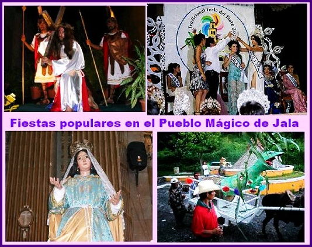
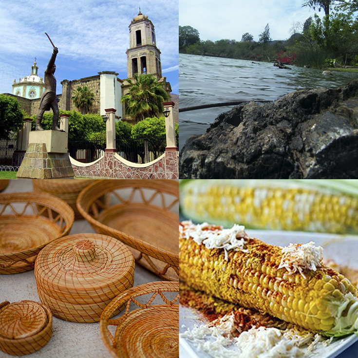

UBICACIÓN: Jala se encuentra en el sur del estado de Nayarit, México, cerca del volcán El Ceboruco. Este Pueblo Mágico está rodeado de paisajes montañosos y cuenta con una altitud de 1,070 metros sobre el nivel del mar.
HISTORIA: Jala, cuyo nombre proviene del náhuatl y significa "lugar donde abunda la arena", tiene una rica historia que se remonta a la época prehispánica. Fue habitado por comunidades náhuatl y evangelizado por frailes franciscanos. Durante el siglo XIX, se construyeron importantes edificaciones como la Basílica Lateranense de Nuestra Señora de la Asunción, una joya arquitectónica que combina estilos gótico y romano. Además, el pueblo conserva calles empedradas y casonas coloniales que reflejan su herencia cultural.
FIESTAS: Jala celebra la famosa Feria del Elote en agosto, donde se exhiben los elotes más grandes de la región. También se realizan fiestas patronales en honor a la Virgen de la Asunción, con procesiones, danzas tradicionales y eventos culturales que atraen a visitantes de todo el país.
PRODUCCIÓN: La economía de Jala se basa en la agricultura, destacando la producción de maíz, conocido por sus elotes gigantes. Además, el turismo cultural y la producción de café son actividades importantes para la región.
